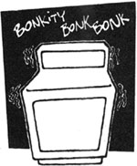

Country Lore
May/June 1986
Copper Condiment
I read Georgiana Kotarski's trick of cleaning copper with lemon and salt in issue 97 and just had to write to let you know what we use: catsup! It's something we almost always have on hand, and it's kept our Revere Ware looking great for years.
-E. Noty, Chicago, Illinois
Where's Mom?
When my children were small, I found that their nap time was the perfect chance to get chores done around our large house or out in the garage, garden, etc. However, the kids were too young to read a note, and I didn't want them to be alarmed should they wake up and be unable to find me. So I made a note board for their bedroom door and found pictures corresponding to the different places around our home. Then I'd just post a picture of wherever I planned to work while the children slept. When they woke up, they knew exactly where to look for me. It always relieved my mind, and I'm sure it made them feel more secure, as well.
-Harla Estle, Hesston, Kansas
Flood Facts
I'd like to pass on a valuable bit of wisdom I learned while inspecting homes damaged by the floods in West Virginia last year. I saw many houses that floated right off their foundations and others that were done in by the pressure of rising and then receding water. But I was puzzled by one house that had survived while those right next to it were completely destroyed. Then an old-timer let me in on the secret to saving a home in a flood: Leave your doors and windows open. Either nail them open or take them off to let the water get in and out of the structure easily. Be especially sure to leave any basement doors or windows open. I also learned that the best time to clean up after the flood-if you can do so safely-is while the water is still in the house. That way you can float most of the mud and debris out along with the receding floodwater.-Russ Cockburn, Coeur d'Alene, Idaho
Slick Fix
Ordinary roofing shingles nailed to docks and wooden steps provide a safe, no-skid surface. They're designed to repel water, they don't cost much, and nowadays they even come in a variety of colors.
-P.J. Parziale, Canoga Park, California
Don't Tread on Me!
Here's a money-saving idea I found in a 1948 book of household hints that my grandmother handed down to me:
Is the carpet runner on your stairs old and worn? You can make it look practically new by moving the carpet up or down half a step. That way the unworn riser sections will now rest on the steps, and the threadbare spots will be moved to the risers, where they won't show as much.
-Helen Puls, Canby, Oregon
Mormon Tabernacle Dryer
I knew from the awful sound my clothes dryer was making that it needed some help, but I also knew that I didn't want to pay for a house call from a repairperson. Since machines are often diagnosed by sound, I decided to use my tape recorder and take my ailing appliance's symptoms to the experts, instead. The man at the store (and his customers) got quite a kick out of it when I came in and played the tape recorder for him, but he immediately (and, I might add, quite accurately) identified just which part was needed.
-Christine Scheere, Greeley, Colorado
Eggsorcism
Last year the birds ate every last one of my bean and cucumber seeds. I wasn't about to offer them seconds, so when I replanted, I sprinkled the rows with crushed eggshells. Not only did they keep the birds away (I don't think the little bandits liked the taste or the texture), but they also marked the rows nicely.
-Diane Graves, Waddington, New York
Litter Lore
While most MOTHER readers would never dream of throwing litter out a car window, I'll bet most of us are guilty now and then of tossing such biodegradables as orange peels and apples cores. Don't! Free meals attract both wild and domestic animals to roadsides, and we all know the sad consequences when automobiles and animals mix.-Leon Werdinger, Crested Butte, Colorado
Through the years we've all probably discovered a few practical, down-home, time-tested solutions to the frustrating little problems of everyday life. Why not share your best "horse sense" with the rest of MOTHER's readers? Send your suggestions to Country Lore, THE MOTHER EARTH NEWS, P.O. Box 70, Hendersonville, NC 28793. A one year subscription-or a one year extension of an existing subscription-will be sent to each contributor whose tip is printed in this column.
-MOTHER.
|
|
|
|
|
 |
 |
|